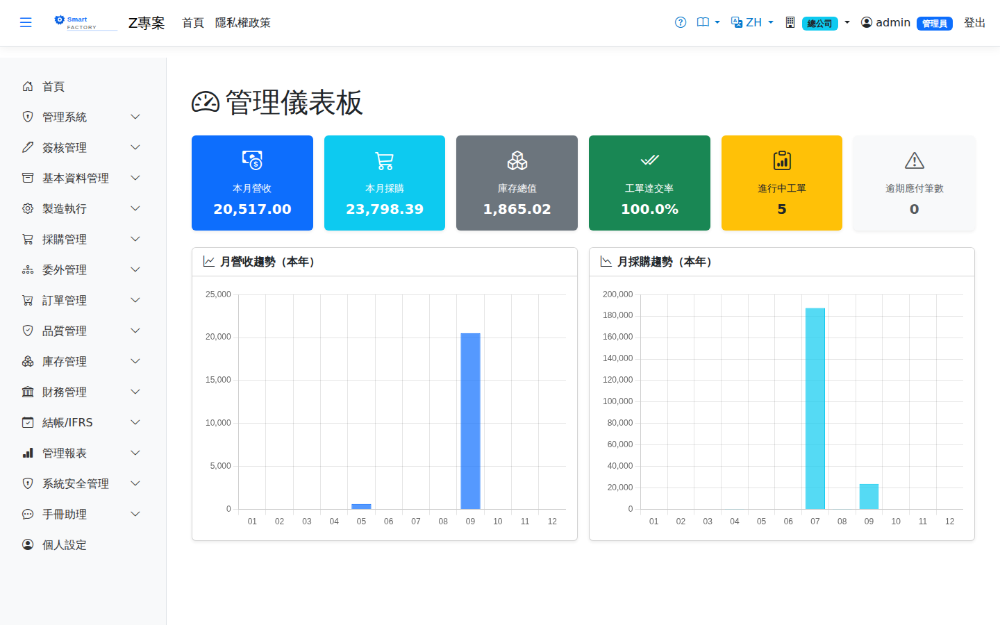

管理儀表板Management dashboard
路由：/Dashboard | 營運 KPI 總覽Route: /Dashboard | Operating KPI overview
彙整銷售、生產、庫存、財務關鍵指標於單一畫面（圖表化），供管理層每日掌握營運狀態。Brings the key sales, production, inventory and finance indicators together on one screen as charts, so management can see how the business is running each day.

管理儀表板畫面截圖（示意，實際欄位/資料依權限與查詢條件而異）Management dashboard screenshot (illustrative; actual fields and data vary by permission and query criteria)
查詢Search
1
查詢列輸入條件後點「查詢」；欄位標題可點擊排序，清單下方有分頁導航。Enter your criteria on the query bar and click "Search"; column headers can be clicked to sort, and the paging controls sit below the list.
2
卡片/圖表點擊可連到對應明細報表。Clicking a card or a chart opens the matching detail report.
欄位說明Field reference
指標卡Indicator cards
| 指標Indicator | 說明Guide |
|---|---|
| 本月營收Monthly Revenue | 當月銷貨金額合計（本位幣）Total sales this month (local currency) |
| 本月採購Monthly Purchase | 當月進貨金額合計（本位幣）Total purchases this month (local currency) |
| 庫存金額Inventory Value | 目前庫存的帳面總值（依 AVCO 均價評估）Total book value of the stock now (valued at the AVCO average) |
| 工單準時率Work Order On-Time Rate | 已完工工單中，實際完工日未晚於計畫完工日的比率The proportion of completed work orders whose actual completion date was no later than planned |
| 未結工單數Open Work Orders | 尚未完工結案的工單張數，反映在製負荷Number of work orders not yet completed and closed, a measure of the WIP load |
| 逾期應付Overdue AP | 已逾到期日仍未付款的應付帳款金額；大於 0 時卡片以警示色呈現Payables past their due date and still unpaid; the card turns a warning colour when it is above 0 |
「本月」與「今年」一律依目前作用廠別所在時區的當地日期計算（例如台北的廠從當地 1 日 0 時起算），不是伺服器或 UTC 時間；所以月初、年初的頭幾個小時，數字會歸在新的月份。"This month" and "this year" always follow the local date in the time zone of your active plant (a Taipei plant starts the month at 00:00 local time on the 1st), not server or UTC time, so the first hours of a new month or year are counted in the new period.
趨勢圖Trend chart
| 圖表Charts | 說明Guide |
|---|---|
| 營收趨勢Revenue trend | 近期各月的銷貨金額走勢The trend of monthly sales |
| 採購趨勢Purchasing trend | 近期各月的進貨金額走勢，與營收對照可觀察備料節奏是否合理The trend of monthly purchases; set against revenue it shows whether the buying rhythm makes sense |